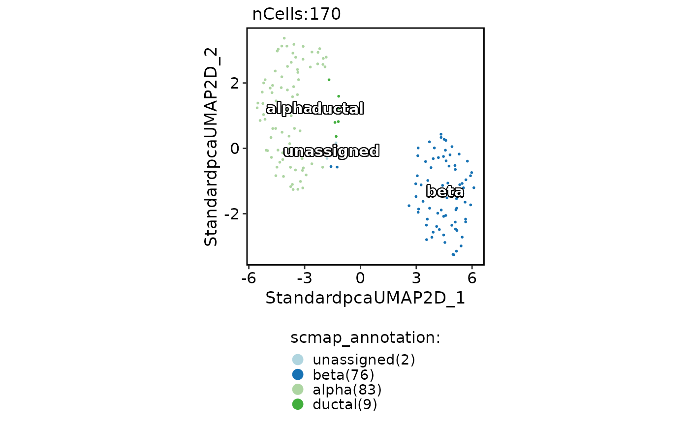

Annotate single cells using scmap
Usage
RunScmap(
srt_query,
srt_ref,
ref_group = NULL,
query_assay = "RNA",
ref_assay = "RNA",
method = "scmapCluster",
nfeatures = 500,
threshold = 0.5,
k = 10,
verbose = TRUE
)Arguments
- srt_query
An object of class Seurat to be annotated with cell types.
- srt_ref
An object of class Seurat storing the reference cells.
- ref_group
Column name in the
srt_refmetadata that represents the cell grouping.- query_assay
Assay to be used for the query data. Default is the default assay of the
srt_queryobject.- ref_assay
Assay to be used for the reference data. Default is the default assay of the
srt_refobject.- method
The method to be used for scmap analysis. Can be any of
"scmapCluster"or"scmapCell".- nfeatures
The number of top features to be selected.
- threshold
The threshold value on similarity to determine if a cell is assigned to a cluster. This should be a value between
0and1.- k
Number of clusters per group for k-means clustering when
methodis"scmapCell".- verbose
Whether to print the message. Default is
TRUE.
Examples
Restored example output generated on 2026-10-13 from SCOP 53ed7e08f. These historical examples have not been revalidated against the current release. Current usage and arguments are documented above.
data(panc8_sub)
keep <- panc8_sub$celltype %in% c("ductal", "alpha", "beta")
panc8_sub <- Seurat::NormalizeData(panc8_sub[, keep], verbose = FALSE)
reference <- panc8_sub[, panc8_sub$tech != "fluidigmc1"]
query <- panc8_sub[, panc8_sub$tech == "fluidigmc1"]
query <- RunScmap(
srt_query = query, srt_ref = reference,
ref_group = "celltype", method = "scmapCluster", nfeatures = 200,
verbose = FALSE
)
#> ℹ [2026-10-13 17:18:00] Data type is log-normalized
#> ℹ [2026-10-13 17:18:00] Data type is log-normalized
query <- RunStandardWorkflow(query, verbose = FALSE, linear_reduction_dims = 10)
#> ℹ [2026-10-13 17:18:02] Skip `log1p()` because `layer = data` is not "counts"
CellDimPlot(
query,
group.by = "scmap_annotation",
label = TRUE, legend.position = "bottom"
)
